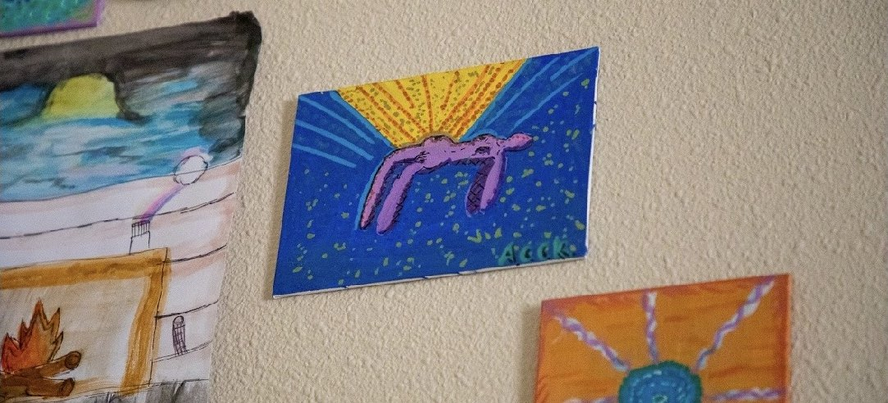
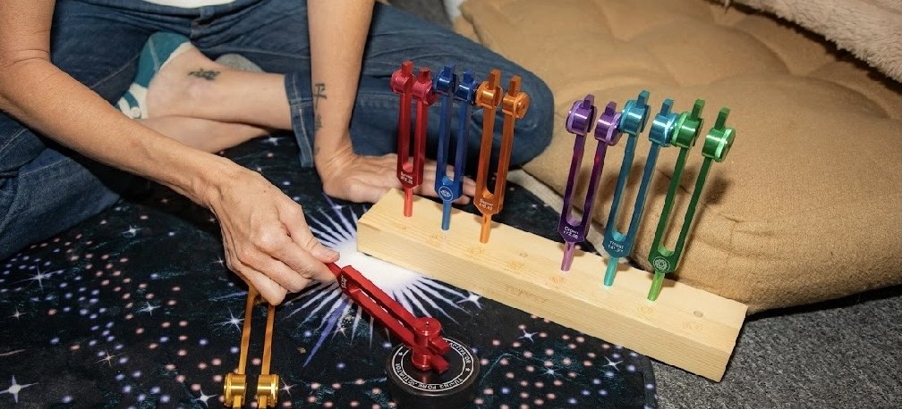

Services
How we can walk this together.
Therapy is for healing. Coaching is for growth. Both are about coming home to yourself.
Therapy services
Licensed in Arizona. In-person at our Mesa office or secure telehealth across AZ.

Individual Therapy
Holistic, trauma-informed therapy for anxiety, depression, trauma, life transitions, addiction, and the sacred work of coming back home to yourself.
- You can't sleep, or you sleep too much
- Something happened, and it's still in your body
- You've tried to push through on your own and you're tired

Anxiety Therapy
For the racing thoughts and the tight chest. Somatic, nervous-system, and EMDR-informed care that treats the root, not just the symptom.
- Calm the body first, because anxiety is physical before it's verbal
- Meet the anxious part with curiosity instead of a fight
- Grounding you can actually use the moment it spikes

Couples Counseling
Reconnect, repair, and create a sacred, fun, intimate union. For couples who love each other and are tired of the same fight.
- Conflict that bonds instead of breaks
- Reconnecting intimacy: emotional, spiritual, and sexual
- Staying in the window where connection can thrive

Ketamine-Assisted Therapy
Real psychotherapy with the medicine. Preparation, a therapist present during the experience, and integration afterward. Not infusion-clinic IV drips.
- A therapist with you the entire session, not a nurse and a recliner
- Preparation built around your intentions
- Integration sessions, where the change actually lasts

Parenting Support
For you, the parent. Burnout, guilt, parenting through your own healing. Not a parenting class. Sacred work from a mom who gets it.
- Parenting burnout no amount of self-care fixes
- Anger you can't explain, especially at your own kids
- Your own unhealed childhood showing up in your parenting
Coaching & wellness services
Available nationwide. These are coaching and wellness offerings, not therapy.

Coaching
For when you're not in crisis but you know there's more. Forward-looking, goal-oriented, accountability-driven. Available anywhere.
- What shaped you, and how it still affects you
- Where you're going and what you want to build
- Goals, accountability, and action

Workshops & Groups
Healing isn't meant to happen alone. Somatic movement, healing circles, and community experiences in a supportive group setting.
- Healing Circles and Women's Circles
- Parenting workshops and somatic movement
- Couples intensives

Tantra Coaching
Sacred sexuality, embodiment, polarity, and the deeper kind of intimacy. Online worldwide. Clinical training meets tantric practice.
- Healing shame, fear, or trauma carried around sex
- Couples deepening intimacy beyond the physical
- Finding your way back to your own desire

Chakra Healing
Energy work for what talk therapy can't always reach. Stuck, blocked, numb in your body? Start here.
- Feeling energetically stuck, blocked, or numb
- Physical tension with no clear medical cause
- You've done talk therapy and something isn't being reached
Not sure which one fits?
That's what the free consultation is for. Reach out and we'll figure it out together.